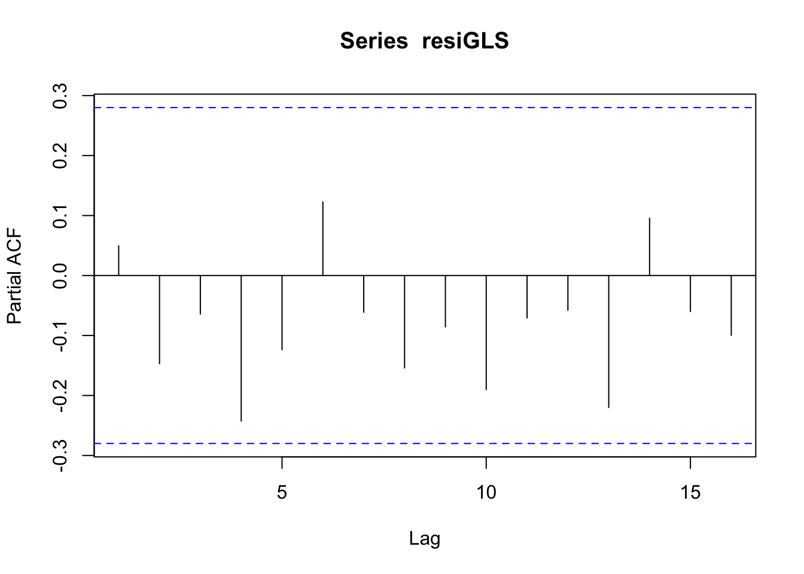
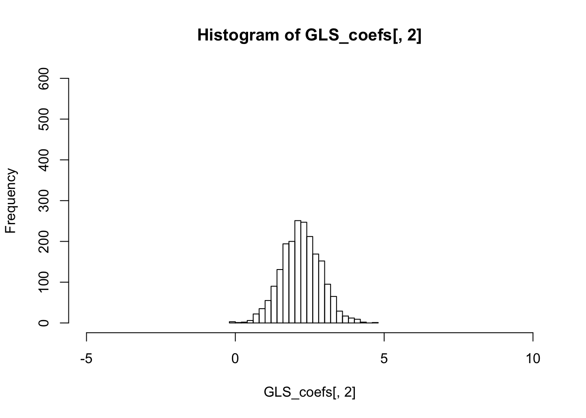

Autocorrelation
The purpose of this section is to show that OLS is not an efficient estimator when there is autocorrelation in the error term; instead, the GLS is better.
Assuming \(y_t\) can be written as a linear function of \(x\) and the error term \(\epsilon\) has autocorrelation \[y_t = 1.2 + 2.2 x_{1,t} + 2.3 x_{2,t} + \epsilon_t \] \[ \epsilon_t = \rho \epsilon_{t-1} + w_t ,\, where\, w \sim N(0,\sigma^2)\] To simulate \(y\) we do:
#install.packages("matrixStats")
library(MASS)
library(matrixStats)
m=50
x <- mvrnorm(n=m,mu=c(0.05,0.08),
Sigma=matrix(c(0.0004,0.00023,0.00023,0.0006),
nrow=2,ncol=2,byrow=TRUE))
## assuming correlation in x
et <- arima.sim(list(order = c(1,0,0),ar=0.8),n=m,rand.gen=rnorm,sd=0.1)
yt <- 1.2 + x %*% c(2.2,2.3)+et1. OLS
Then we do regress \(y\) on \(x\) using OLS:
regressY <- lm(yt~x)
summary(regressY)##
## Call:
## lm(formula = yt ~ x)
##
## Residuals:
## Min 1Q Median 3Q Max
## -0.210733 -0.075193 -0.002246 0.082349 0.152111
##
## Coefficients:
## Estimate Std. Error t value Pr(>|t|)
## (Intercept) 1.29574 0.05106 25.376 < 2e-16 ***
## x1 2.76363 0.66160 4.177 0.000127 ***
## x2 1.52826 0.59561 2.566 0.013541 *
## ---
## Signif. codes: 0 '***' 0.001 '**' 0.01 '*' 0.05 '.' 0.1 ' ' 1
##
## Residual standard error: 0.09152 on 47 degrees of freedom
## Multiple R-squared: 0.4218, Adjusted R-squared: 0.3972
## F-statistic: 17.14 on 2 and 47 DF, p-value: 2.565e-06regressY$coefficients## (Intercept) x1 x2
## 1.295744 2.763632 1.528259Test the autocorrelation of residuals
resi <- regressY$residuals
pacf(resi)
ar.ols(resi)##
## Call:
## ar.ols(x = resi)
##
## Coefficients:
## 1 2 3 4 5 6 7 8
## 0.2506 -0.2385 -0.0872 -0.2247 -0.1210 0.1331 -0.0703 -0.1665
## 9 10
## -0.0445 -0.2467
##
## Intercept: 0.007674 (0.0114)
##
## Order selected 10 sigma^2 estimated as 0.004622. GLS
GLS with AR(1) residuals is actually OLS on the below equation:
\[y_t - \rho y_{t-1} = \alpha (1-\rho) + \beta_1(x_{1,t} - \rho x_{1,t-1}) + \beta_2 (x_{2,t} - \rho x_{2,t-1}) + w\]
## regress on resi hat
regressE <- lm(resi[2:length(resi)]~resi[1:(length(resi)-1)]-1)
rho <- regressE$coefficients[1]
## GLS
## yt - rho * yt_1 = alpha * (1-rho) + beta1*(x1_t - rho * x1_t-1) + beta *
## (x2_t - rho * x2_t-1)
yt2 <- yt[2:length(yt)]
xt2 <- x[2:nrow(x),]
xprime <- (xt2- c(rho,rho) * x[1:(nrow(x)-1),])
regressY_GLS <- lm( (yt2-rho*yt[1:(length(yt)-1)]) ~ xprime)
summary(regressY_GLS)##
## Call:
## lm(formula = (yt2 - rho * yt[1:(length(yt) - 1)]) ~ xprime)
##
## Residuals:
## Min 1Q Median 3Q Max
## -0.177314 -0.071225 -0.003311 0.061894 0.159587
##
## Coefficients:
## Estimate Std. Error t value Pr(>|t|)
## (Intercept) 0.81056 0.03086 26.263 < 2e-16 ***
## xprime1 2.75543 0.57350 4.805 1.69e-05 ***
## xprime2 1.80830 0.56190 3.218 0.00237 **
## ---
## Signif. codes: 0 '***' 0.001 '**' 0.01 '*' 0.05 '.' 0.1 ' ' 1
##
## Residual standard error: 0.08437 on 46 degrees of freedom
## Multiple R-squared: 0.5235, Adjusted R-squared: 0.5027
## F-statistic: 25.26 on 2 and 46 DF, p-value: 3.947e-08alpha <- regressY_GLS$coefficients[1]/(1-rho)
alpha## (Intercept)
## 1.276583See if the residuals of GLS has autocorrelation:
resiGLS <- regressY_GLS$residuals
pacf(resiGLS)
3. Run n times
We redo the above steps for n times to observe the sampling distribution of OLS and GLS estimators:
n=2000
OLS_coefs <- matrix(nrow=n,ncol=3)
GLS_coefs <- matrix(nrow=n,ncol=3)
for(i in 1:n) {
x <- mvrnorm(n=m,mu=c(0.05,0.08),
Sigma=matrix(c(0.0004,0.00023,0.00023,0.0006),
nrow=2,ncol=2,byrow=TRUE))
## assuming autocorrelation in x
et <- arima.sim(list(order = c(1,0,0),ar=0.8),n=m,rand.gen=rnorm,sd=0.1)
yt <- 1.2 + x %*% c(2.2,2.3)+et
regressY <- lm(yt~x)
#summary(regressY)
OLS_coefs[i,] <- regressY$coefficients
## GLS
resi <- regressY$residuals
regressE <- lm(resi[2:length(resi)]~resi[1:(length(resi)-1)])
rho <- regressE$coefficients[2]
## GLS
## yt - rho * yt_1 = alpha * (1-rho) + beta1*(x1_t - rho * x1_t-1) + beta *
## (x2_t - rho * x2_t-1)
# yt2 <- yt[2:length(yt)]
# xt2 <- x[2:nrow(x),]
# xprime <- (xt2- c(rho,rho) * x[1:(nrow(x)-1),])
# regressY_GLS <- lm( (yt2-rho*yt[1:(length(yt)-1)]) ~ xprime)
# alpha <- regressY_GLS$coefficients[1]/(1-rho)
# GLS_coefs[i,1] <- alpha
# GLS_coefs[i,2:3] <- regressY_GLS$coefficients[2:3]
GLS_coefs[i,] <- CochraneOrcuttIteration(yt,x,0.001)
}
colMeans(OLS_coefs)## [1] 1.199079 2.213421 2.291709colMeans(GLS_coefs)## [1] 1.199158 2.212982 2.289499The variance of the sampling distribution of GLS is much smaller than that of the OLS, and is therefore more effieicnt.
colVars(OLS_coefs)## [1] 0.01033834 1.78235434 1.08553247colVars(GLS_coefs)## [1] 0.007005371 0.441118007 0.276296824hist(OLS_coefs[,2],breaks=20,xlim=c(-5,10),ylim=c(0,600))
hist(GLS_coefs[,2],breaks=20,xlim=c(-5,10),ylim=c(0,600))